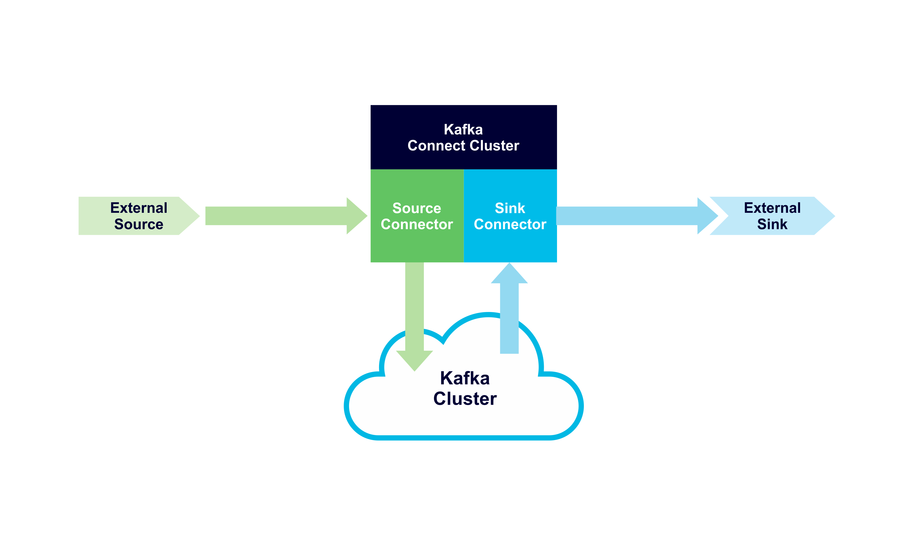

Set up CDC with Debezium!
Workshop plan
- The problem that we'll try to solve using CDC
- Introduction to the tech involved
- Working with Debezium
- Takeaways
- Summary
The problem: updating campaigns on the go
Bad solution: db polling
Better solution: CDC with Debezium~!
What is Debezium?
Debezium is a Kafka Connect connector
which enables CDC on popular databases
What is all this stuff?
You already know what CDC is
What is Kafka?
Fast, scalable, durable, and distributed messaging system that records all messages in replicated, partitioned, and totally-ordered transaction logs


Kafka Guarantees
- Maintains order of produced messages in a partition
- Consumer gets message always in said order
- Topic with a replication factor of N will tolerate up to N-1 server failures
Also...
- Consumers and consumer groups will pick up when they left (offset can be reset ofc)
- Server failure in a cluster is transparent to consumers and producers
- Kafka is really fast
Kafka Connect
Tool for scalably and reliably streaming data between Apache Kafka and other systems. It makes it simple to quickly define connectors that move large collections of data into and out of Kafka.
Why Kafka Connect?
- Scalability and distribution OOTB
- Many connectors available
- A common framework!
- Take a lot of heavy lifting from developer
- Handy REST interface
Connector types
Debezium is a collection
of a source connectors
2. Working with Debezium
Available connectors
- MySQL
- MongoDB
- PostgreSQL
- Oracle
- SQL Server
- Cassandra
Available connectors
- MySQL
- MongoDB
- PostgreSQL
- Oracle
- SQL Server
- Cassandra
TODO Update for PG
How Debezium works (simplified)
- Grab a global read lock
- Get binlog position
- Get schema
- Release lock
- Scan all tables, write CREATE events (in transaction)
- Start watching the binlog for changes
DB Configuration
server-id = 223344
log_bin = mysql-bin
binlog_format = row
binlog_row_image = full
expire_logs_days = 10
DB Configuration
GRANT SELECT, RELOAD, SHOW DATABASES,
REPLICATION SLAVE, REPLICATION CLIENT
ON *.* TO 'debezium' IDENTIFIED BY 'dbz';
I've done all the configuring for you
Click!What needs to be done?
- Try out the polling mechanism
- What are the issues?
- Configure a Debezium Connector
- Read the messages from Kafka topic
- Modify the app so it uses Kafka
- Try and figure out pros and cons of CDC
- Play around! Go crazy!
Try out the polling mechanism
- Start the application
- Check out the code and DB schema
- Use psql to change rows in the DB
- Can you see any potential problems?
Configure a Debezium Connector
- Check out the Connector API
- Use available configuration to create your connector
Debezium Configuration
"name": "campaigns-connector",
"config": {
"connector.class": "io.debezium.connector.postgresql.PostgresConnector",
"tasks.max": "1",
"database.hostname": "postgres",
"database.port": "5432",
"database.user": "postgres",
"database.password": "postgres",
"database.dbname" : "postgres",
"database.server.name": "dbserver1",
"schema.include": "campaigns"
}
Configure a Debezium Connector
- Check out the Connector API
- Use available configuration to create your connector
- Is the connector created?
Kafka configuration
- If automatic topic creation is off, you have to create them yourself
- Schema history topic has to have only one partition
Read the messages from Kafka topic
- Get to know the Kafka scripts
- List available topics
Topic names
Default is DB_SERVER_NAME.DB_NAME.TABLE_NAME but can be changed
Read the messages from Kafka topic
- Get to know the Kafka scripts
- List available topics
- Listen to the messages, while making changes in the DB
How do events look like
Click!Modify the app so it uses Kafka
- Install a Kafka client using npm
- Configure the Kafka client
- Switch the polling mechanism to Kafka listener
- Test it, making changes in the DB
Try and figure out pros and cons of CDC
- Is the new solution better or worse?
- What did we gain?
- What were the challenges?
Play around, go crazy~!
- You can modify the config
- You can use faster format like Avro
- You can transform your messages
Transformation examples
- unwrap (Debezium specific)
- insertKey
- extractKey
- Reroute (Debezium specific)
- Key/value format transformations
Summary
- CDC is a good way to decouple your project
- Debezium delivers a nice open source way of implementing CDC in various databases
- Kafka and Connect offer a very bulletproof solution
- It's good to know and try out Kafka and Connect before implementing Debezium